NEXOS
Red de ayuda en tiempo real · Documento de proyecto
NEXOS conecta a quienes quieren donar con los puntos de acopio de Cali después de una emergencia. Una ciudad 3D muestra dónde se necesita ayuda: el donante baja de la ciudad a la zona, al barrio y al punto de acopio, y arma una cesta. El encargado del punto lleva su inventario, recibe los aportes y traslada lo que sobra a otros puntos.
Este documento reúne la evidencia de cada criterio de la rúbrica. Todas las capturas son de la app real: las de esta página se tomaron el 28 de octubre de 2026 sobre la versión publicada, y las del proceso salen de la bitácora (más de 1000 capturas tomadas durante el desarrollo).
Equipo: Melissa Palacio Rincón, Juan Manuel Chamorro y Juan Camilo Bravo.
Mapa de la rúbrica
Cada fila lleva a la sección donde está su evidencia.
| Criterio | Peso | Evidencia en este documento |
|---|---|---|
| Iteraciones del proyecto | 15 % | Línea de tiempo de 8 versiones; cada una con qué cambió, por qué (hallazgo, heurística, restricción técnica o de contenido) y cómo llevó a la siguiente. |
| Proceso asistido por IA | 10 % | Herramientas, estructura de los prompts, insumos entregados, 3 prompts reales con su resultado y 3 malentendidos corregidos. |
| Dominio de Three.js | 10 % | Escena, cámara, renderizador, luces, sombras, materiales, geometrías, carga, animación, controles, pantalla completa, niebla y partículas, con el código real. |
| Producción de recursos | 10 % | Proceso por tipo de recurso (referencia → modelado → material → exportación) y tabla de origen y licencia. |
| Plataformas objetivo | 5 % | Plataformas, decisiones y métricas de peso antes y después; versión ligera; método de medición de FPS. |
| Convenciones y metáforas | 5 % | Referente real ↔ solución en la interfaz, y por qué el público la reconoce. |
| Consistencia | 5 % | Sistema acción ↔ señal visual, con capturas. |
| Elementos de la interfaz | 5 % | Inventario de componentes con función, estados y ubicación. |
| Navegación | 5 % | Mapa de la experiencia de los dos roles, navegación global y local, cámara 3D y orientación. |
| Diseño de información | 5 % | Jerarquía, agrupación, dosificación, iconografía y procedencia del contenido. |
| Seguimiento ocular | 4 % | 4 mapas de calor de la prueba del 22 de octubre, lectura de cada uno y el ajuste que se hizo. |
| Contraste y uniformidad | 3 % | Usos del contraste con ejemplos y verificación WCAG de 16 combinaciones de texto. |
| Retícula y diagramación | 4 % | Retícula medida y superpuesta en computador y celular, y su relación con la escena 3D. |
| Consistencia interna | 3 % | Comparación de pantallas y escenas: estilo 3D, interfaz, tono del texto y animación. |
| Color | 3 % | Paleta en HEX con el rol de cada color, en la interfaz y en la escena 3D. |
| Tipografía | 3 % | Familia, escala, pesos y usos, y legibilidad en computador y celular. |
| Guía de estilo | 5 % | Compendio de tokens, componentes, estilo 3D, animación y ejemplos de uso correcto e incorrecto. |
Iteraciones del proyecto
15 %Planeación · Para cada versión: qué cambió, por qué y cómo esa decisión llevó a la siguiente.NEXOS pasó por 8 versiones entre el 30 de septiembre y el 28 de octubre de 2026 (116 versiones guardadas en GitHub). Las razones de cada cambio vienen de cuatro fuentes: la prueba de usabilidad con eye tracking, heurísticas de usabilidad, restricciones técnicas y restricciones de contenido.
La secuencia completa, apartado por apartado, está en Evolución en imágenes (134 capturas).
Primer prototipo: la ciudad como interfaz


- Qué cambió
- Se construyó el recorrido completo: bajada entre nubes, ciudad con cinco zonas, barrio, guía que camina hasta la casa, panel de suministros, cesta y confirmación.
- Por qué
- Contenido El brief pedía que la ciudad 3D fuera la interfaz principal ("no un tablero lleno de gráficos") y que un adulto mayor pudiera usarla sin ayuda.
- Llevó a
- Al recorrerlo aparecieron errores de escala y de lectura: el guía tapaba la ciudad y los íconos no seguían a la cámara. De ahí salió V2.
Corregir escala, íconos y datos


- Qué cambió
- El guía se redujo. Los íconos se proyectan cada cuadro con la cámara. Cada insumo quedó en una sola categoría y su "+" se limita a lo que el barrio necesita. Las cajas se van acumulando sobre la mesa a medida que llegan.
- Por qué
- Heurística Visibilidad del estado del sistema y prevención de errores: un mismo insumo mostraba cantidades distintas en dos pestañas. Prueba interna Recorrido del equipo con capturas anotadas.
- Llevó a
- Con el flujo estable, el problema pasó a ser la legibilidad: el vidrio decorativo de los paneles competía con la escena 3D.
Rediseño "Navy inmersivo"


- Qué cambió
- Los paneles pasaron de vidrio con brillo y halo a una superficie casi sólida con sombra azul marino. Todo lo tocable responde al presionar, y el efecto al pasar el mouse solo existe donde hay mouse. Las necesidades se escriben en palabras ("Alta", "Media"), no en porcentajes.
- Por qué
- Heurística Diseño estético y minimalista, y legibilidad sobre un fondo 3D en movimiento. Contenido Un porcentaje exige interpretar; una palabra no.
- Llevó a
- La interfaz ya era legible, pero los datos eran inventados y cada navegador tenía los suyos. V4 los volvió reales.
Modelos propios, inventario real y clima de Cali


- Qué cambió
- Entraron las casas modeladas por el equipo (Blender + Substance). El inventario se lee y se escribe en una hoja de Google, y el punto de acopio 3D muestra las cajas que de verdad hay. La luz, el cielo y el clima siguen la hora real de Cali.
- Por qué
- Restricción técnica Dos voluntarios en dos dispositivos deben ver los mismos números, y el navegador no puede guardar credenciales de Google; por eso se usa Apps Script. Contenido El encargado del punto solo debe ver su zona.
- Llevó a
- Las casas con texturas pesaban hasta 6,5 MB cada una y el mapa se volvió lento en celular.
Rendimiento, versión ligera y pestañas separadas


- Qué cambió
- Las tres casas más pesadas bajaron de 16,2 MB a 3,6 MB. La ciudad dibuja su sombra una sola vez, la resolución se adapta al equipo y se añadió una versión ligera sin 3D. El panel del punto se dividió en dos pestañas. Se aplicaron heurísticas de deshacer, confirmar, ayuda y estados.
- Por qué
- Restricción técnica Celulares y equipos sin tarjeta gráfica. Heurística Control y libertad del usuario (deshacer), y ayuda y documentación (botón "?").
- Llevó a
- En celular, los íconos sobre cada zona tapaban la ciudad y eran difíciles de tocar.
Celular, zonas delimitadas y carga continua


- Qué cambió
- En celular aparece una lista de zonas en lugar de los marcadores. Cada zona tiene borde y color propios. La bajada entre nubes sigue mientras el barrio carga, sin detenerse, y la pantalla de carga muestra al guía.
- Por qué
- Heurística Reconocer antes que recordar, y área táctil mínima de 44–56 px. Restricción técnica La carga en red lenta no debe sentirse como un error.
- Llevó a
- Con el prototipo completo en las dos plataformas, el equipo hizo la prueba de usabilidad con eye tracking.
Prueba de usabilidad y eye tracking
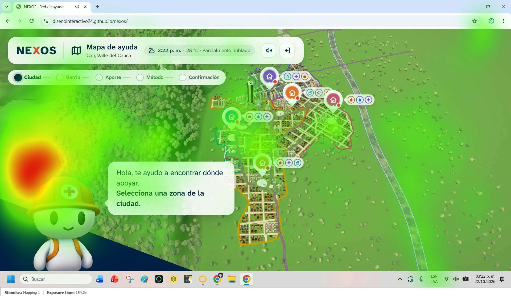


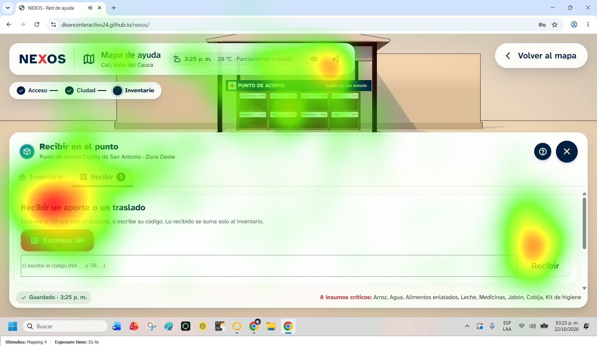
- Método
- ISO 9241-11 (efectividad, eficiencia y satisfacción), pensamiento en voz alta y eye tracking. Participante de 19 años. Tres tareas: donar a la zona norte y agendar la entrega más cercana, dejar en cero el inventario del punto centro, y recibir la donación con su código en el punto norte.
- Hallazgos
- Completó las tres tareas sin ayuda, y donar le resultó intuitivo. Prioridad alta Mejorar la orientación y la organización visual del inventario. Prioridad media Dar más protagonismo a las demás categorías de donación: no vio "Medicinas" ni "Aseo". También sugirió un botón para dejar un insumo en cero.
- Llevó a
- V8 responde a cada hallazgo. La lectura de cada mapa de calor está en Seguimiento ocular.
Respuesta a la prueba y unificación visual


- Qué cambió
- El punto de acopio abre con un menú de tres acciones: gestionar inventario, recibir donaciones y enviar a otros puntos. Las categorías de donación son fichas grandes. El inventario tiene filtros (Todos, Críticos, Estables, Abastecidos). Las franjas de entrega se calculan con la hora real de Cali ("Hoy, antes del cierre"). Hay una portada nueva con el render de la ciudad, y la versión ligera tiene el mismo diseño.
- Por qué
- Hallazgo de la prueba Orientación del inventario y protagonismo de las categorías. Hallazgo del equipo La entrega más cercana salía para el día siguiente aunque el punto seguía abierto.
- Pendiente
- El botón para dejar un insumo en cero no se implementó. Hoy se llega a cero con "− caja", que resta una caja completa por toque, o escribiendo el número en el campo.
Proceso de desarrollo asistido por IA
10 %Implementación con IA · Herramientas, estructura de los prompts, insumos, ejemplos reales y corrección de malentendidos.Herramientas
| Herramienta | Para qué se usó |
|---|---|
| Claude Code (modelo Claude Opus, en la app de escritorio) | Escribir y modificar todo el código (Three.js, interfaz, versión ligera, Apps Script de la hoja). También los scripts de Blender que convierten los modelos y la verificación en el navegador: después de cada cambio, Claude abría la app, la recorría y tomaba capturas (1003 en total). |
| IA generativa de imágenes | Keyframes de referencia del ambiente buscado (barrio, panel de suministros, mapa), entregados con el primer prompt. |
| Blender 5 y Substance Painter (sin IA) | Modelado, rig, UV, bakes y texturas, hechos por el equipo. |
| GitHub y GitHub Pages | Control de versiones (116 versiones) y publicación automática en cada cambio. |
Cómo se estructuraron los prompts
El proyecto empezó con un prompt largo y estructurado, y siguió con prompts cortos de iteración que casi siempre llevaban una captura anotada.
1. Prompt base (30 de septiembre)
Escrito en inglés, con secciones separadas:
- Rol y producto: "You are going to design and implement an interactive web experience called NEXOS".
- Contexto: plataforma humanitaria para emergencias en Cali.
- Tono: calmado, confiable, accesible, guiado y humano, "without becoming playful or childish".
- Restricciones: "This is NOT a videogame"; "Do not redesign this as a traditional dashboard"; "The 3D environment is the main interface".
- Usuario: un adulto mayor debe poder usarlo sin ayuda.
- Formato de salida: escenas en orden (ciudad → zona → barrio → punto → cesta) y su comportamiento.
2. Prompts de iteración
En español, con una estructura repetida:
- Dónde: "en la parte del punto de acopio…", "en la versión ligera…".
- Qué está mal y por qué: "se ve demasiado apretado", "no se aprecia la ciudad".
- Qué se espera: "que una cosa sea actualizar inventario y otra pestaña recibir".
- Evidencia visual: una captura con círculos o marcas en rojo.
- Alcance: "haz lo mismo con…" para extender una solución aprobada a otra pantalla, lo que mantiene la consistencia.
Insumos que se le entregaron a la IA


También se le entregaron los archivos GLB y FBX con sus texturas de Substance, un mapa de vías de OpenStreetMap en SVG, la zonificación del MIO y el informe de usabilidad.
Tres prompts reales y su resultado
Ejemplo 1 · Dividir las acciones del punto de acopio (11 de octubre, mensaje #109)
Ejemplo 2 · Franjas de entrega reales (28 de octubre, mensaje #179)
Resultado: deliveryWindows(point, now) en src/data/delivery.js calcula las franjas con la hora de Cali (America/Bogota) y el horario de apertura y cierre de cada punto. Deja 30 minutos para llegar y exige al menos 30 minutos de estadía. Ofrece "Hoy, esta mañana", "Hoy en la tarde" o "Hoy, antes del cierre" mientras alcance, y si no, el día siguiente.

Ejemplo 3 · Categorías inspiradas en una referencia (28 de octubre, mensaje #205)

Este prompt coincidió con el hallazgo de prioridad media de la prueba: dar más protagonismo a las categorías.
Malentendidos de la IA y cómo se corrigieron
| Qué pasó | Cómo se notó | Cómo se corrigió |
|---|---|---|
| Rig del guía. La IA lo construyó con huesos que deformaban la malla: los brazos se doblaban como una mano y aparecían líneas. | Capturas de Blender del equipo (#57, #63): "nooo todo esta completamente mal, deja de lado ese rig y empieza de nuevo, con el modelo que te di". | Se reformuló la restricción: "un rig muy simple… brazos pegados al cuerpo que se muevan como una pieza". Se cambió a un rig de títere, donde cada pieza es rígida y cuelga de una articulación (tools/exportar_guia.py), sin tocar la malla. |
| Texturas giradas. Los bakes de Substance se veían rotados en la app. | "es como si me hubieses dado mal los modelos, porque yo hice los bakes pero ahi se ve como si estuviese girada la textura" (#83). | Se identificó que las UV del archivo entregado no coincidían con las del bake. El equipo reexportó los GLB con sus UV y el script fbx_to_glb.py pega cada textura a su material por nombre. |
| Calles sobre las casas. Las vías abstraídas de OpenStreetMap atravesaban parques y manzanas. | Captura anotada (#49): "las carreteras no pasen por encima ni de parques, ni de casas". | Las manzanas se generan alrededor de las vías, y no al revés. |
?hoja=local). La conversación completa, con los prompts exactos y las capturas, está en la bitácora.Dominio de la librería Three.js
10 %Componentes principales y la estrategia de cada uno en el código. Three.js r174, GSAP 3 y Vite, sin framework.La app tiene un solo renderizador (src/three/Stage.js). La ciudad, el barrio y el punto de acopio son grupos que entran y salen de la misma escena, y una cámara con su controlador (CameraRig.js) viaja entre ellos.
| Componente | Estrategia aplicada | Archivo |
|---|---|---|
| Escena | Una THREE.Scene con niebla lineal (Fog) que se acerca con la lluvia, y un cielo propio: una esfera con ShaderMaterial que mezcla un color de cenit y uno de horizonte, con brillo del sol y estrellas. | Stage.js |
| Cámara | PerspectiveCamera(38°). Un ángulo cerrado aplana la perspectiva y hace que la ciudad se lea como un mapa. Los planos cercano y lejano cambian por lugar (setClip) para no perder precisión de profundidad. viewOffset corre el centro de la imagen para que lo importante no quede detrás de un panel. | Stage.js, CameraRig.js |
| Renderizador | WebGLRenderer en sRGB con NeutralToneMapping. La resolución se limita a 1,5× y baja sola si el equipo no alcanza 28 cuadros por segundo. La escena se dibuja en un objetivo con multisample para que el antialias no se pague dos veces. | Stage.js |
| Luces | HemisphereLight (cielo frío y rebote cálido del suelo), un sol DirectionalLight cálido que proyecta sombras y una luz de relleno opuesta. La luz sigue la hora real de Cali y el clima, con transiciones de GSAP (applyMood). | Stage.js, caliSky.js |
| Sombras | Mapa de 2048 px con PCFShadowMap y bordes suaves. La cámara de sombra se ajusta al área visible (setShadowFrame). En la ciudad la sombra se dibuja una vez y se conserva (autoUpdate = false); en el barrio se dibuja cada cuadro porque hay cosas que se mueven. | Stage.js |
| Materiales | MeshStandardMaterial mate (roughness 1 en árboles), con reflejos suaves de un entorno PMREMGenerator + RoomEnvironment al 32 %. stylize() da a los modelos luz por bandas (dos o tres tonos). MeshBasicMaterial se usa para lo que no recibe luz. | stylize.js, materials.js |
| Geometrías | Primitivas (BoxGeometry, CylinderGeometry, RoundedBoxGeometry, ExtrudeGeometry desde Shape) para el mapa y los insumos. InstancedMesh (17 usos) dibuja miles de árboles y casas del mapa en una sola llamada. | CityOverview.js, procedural/ |
| Carga de modelos | GLTFLoader con DRACOLoader y MeshoptDecoder para GLB comprimidos. Si un modelo falla, se usa el procedural de respaldo. | AssetLoader.js |
| Animación | AnimationMixer para las acciones del guía (idle, walk) y GSAP para la cámara y los gestos. GSAP corre en el mismo reloj que el renderizador (gsap.ticker), así que la interfaz y el 3D no se desfasan. | GuideCharacter.js, Stage.js |
| Controles | OrbitControls limitado en la ciudad: ángulos, distancia mínima y máxima, y amortiguación. Raycaster para tocar zonas, casas y el puesto. La rueda solo hace zoom cuando el puntero está sobre el mapa, y el pellizco usa los mismos límites. | App.js |
| Pantalla completa y tamaño | El lienzo ocupa toda la ventana y se recalcula con resize y ResizeObserver (aspecto, matriz de proyección y resolución). No hay un botón de la API Fullscreen: la app ya ocupa la ventana completa. | Stage.js |
| Partículas y efectos | Points para la lluvia y las estrellas, Sprite para halos, CanvasTexture para los íconos sobre el mapa, y un destello de rayo en el posproceso. | CloudLayer.js, Stage.js |
Código real: luces y sombras
this.hemi = new THREE.HemisphereLight('#E6EFF7', '#D9BC94', 1.25) // cielo frío, rebote cálido
this.sun = new THREE.DirectionalLight('#FFE2BC', 3.0) // sol de media mañana
this.sun.castShadow = true
this.sun.shadow.mapSize.set(2048, 2048)
this.sun.shadow.radius = 4 // bordes suaves
this.fill = new THREE.DirectionalLight('#FFEFDC', 0.45) // relleno: nada queda negroCódigo real: órbita limitada sobre el mapa
const o = (this.orbit = new OrbitControls(this.stage.camera, this.stage.canvas))
o.enableDamping = true
o.minAzimuthAngle = sph.theta - 0.6 // se puede girar hacia los cerros del oeste…
o.maxAzimuthAngle = sph.theta + 0.9
o.maxPolarAngle = Math.min(1.36, sph.phi + 0.5) // …pero nunca ver debajo del suelo
o.minDistance = sph.radius * 0.6
o.maxDistance = sph.radius * 1.2Código real: sombras fijas en la ciudad
setShadowsLive(live) {
this.renderer.shadowMap.autoUpdate = live // ciudad: false · barrio: true
this.renderer.shadowMap.needsUpdate = true
}Producción de recursos
10 %Creación de assets · Proceso por tipo de recurso, herramientas, decisiones, y origen y licencia de lo que no se hizo desde cero.Casas (Blender → Substance Painter → GLB)

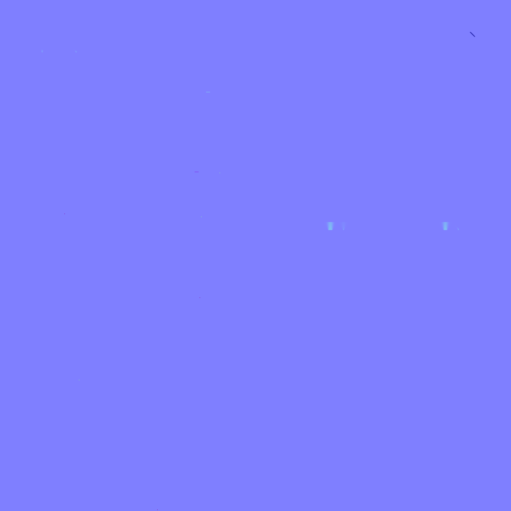

- Modelado en Blender por el equipo: 7 casas (teja, techo ondulado, dos pisos y estratos 2 a 5). La puerta de cada una se mide para que tenga 2,1 m en la escena.
- UV, bake y texturizado en Substance Painter. Se exportan BaseColor, Normal y Roughness por material. Se descartan Height (glTF no lo usa), y Metallic y Emissive cuando están totalmente en negro.
- Conversión con
tools/fbx_to_glb.py, un script de Blender que se ejecuta sin abrir la interfaz. Pega cada textura a su material por nombre, une las piezas que comparten material y escribe el GLB con las texturas adentro. - Registro en
src/data/assets.js: el lado de la puerta, la escala y el nombre del material de las ventanas, para que se enciendan de noche. - Versión para el mapa:
tools/casas_mapa.pygenera una copia más liviana de cada casa para verla desde lejos (de 152 KB a 135 KB en la casa de dos pisos, por ejemplo).
El guía (personaje)


Decisiones: el rig es de títere, con piezas rígidas colgadas de seis articulaciones (cuerpo, cabeza, brazos y piernas), porque los huesos deformaban la malla. Solo se usa el BaseColor, con superficie mate, para que se vea tal como está pintado. La cara se dibuja en tiempo real (guideFace.js) para poder animar las expresiones. La cruz del casco viene pintada en la textura.
Vecinos, edificios, props y árboles
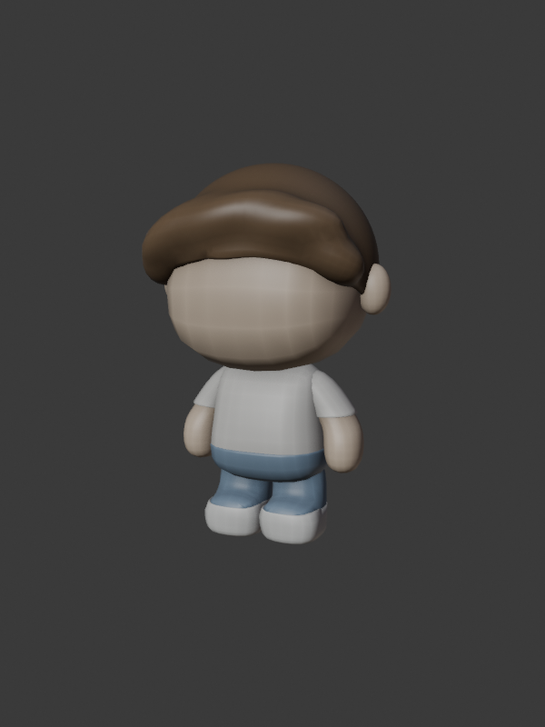

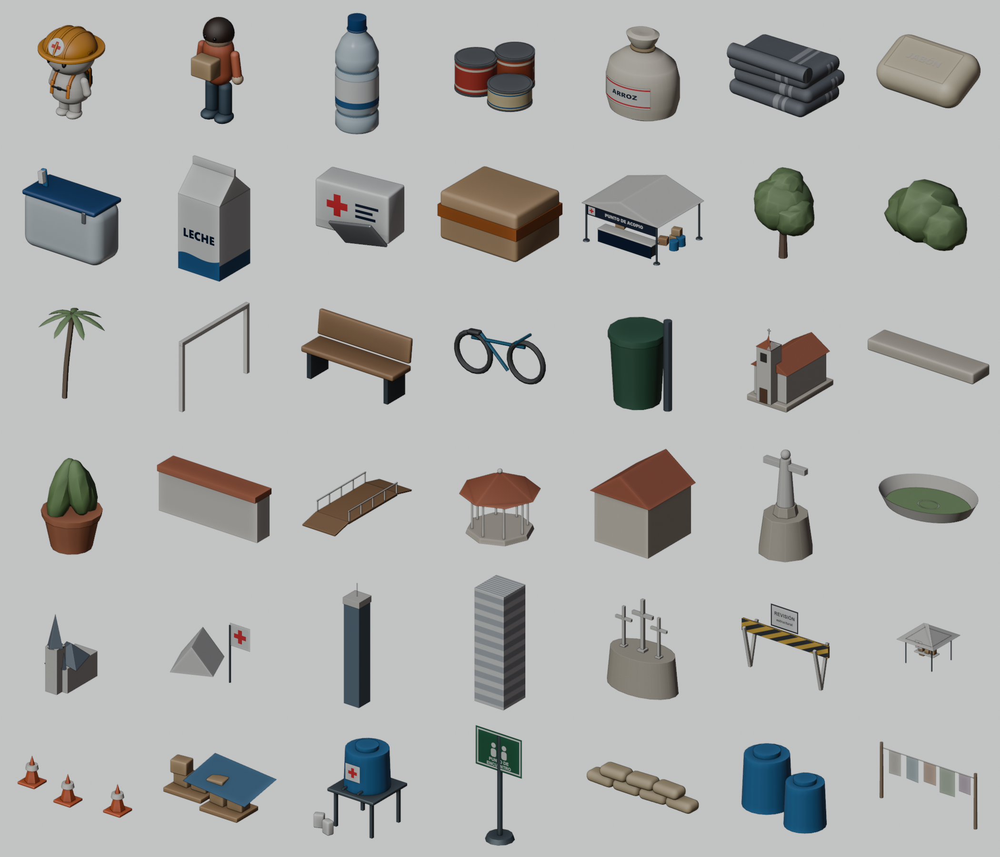
- Edificios (Torre de Cali, estadio, La Ermita, iglesia de San Antonio, punto de acopio y tres edificios genéricos) y props (basurero, caja eléctrica, cono, hidrante, parada de bus, poste y teléfono): modelados y texturizados por el equipo en Blender y Substance. Se exportan con
tools/exportar_props.py, que los asienta en el suelo. - Árboles: tres modelos del equipo, cada uno con una versión "lejos" más simple para la ciudad (nivel de detalle).
- Insumos, vegetación base y elementos del mapa: generados por código (
src/three/procedural/). Luego se exportaron a FBX en quads, sin triángulos ni n-gonos (modelos_fbx/informe.txt), para que el equipo pudiera retexturizarlos.
Mapa, interfaz y sonido
- Mapa de Cali: las vías vienen de OpenStreetMap (
fuentes_3d/mapa_cali/Map_of_Cali.svg) y se abstraen a avenidas y manzanas por zona. Las cinco zonas siguen la zonificación del MIO. - Íconos: un set propio de trazo redondeado en SVG (
src/ui/icons.js), con 54 íconos, uno por cada insumo (arroz, lata, leche, cobija, kit…). - Portada: un render de la propia ciudad 3D, exportado a WebP de 1158 × 1320 px.
- Sonido: 100 % procedural con Web Audio (pad ambiental, melodía, pájaros en el barrio y sonidos de los botones). No hay archivos de audio.
Origen y licencia
| Recurso | Origen | Licencia o crédito |
|---|---|---|
| Casas, guía, vecinos, edificios, props, árboles y terrenos | Equipo NEXOS (Blender + Substance Painter) | Propios |
| Insumos y elementos procedurales del mapa, íconos SVG, sonido | Generados por código con Claude Code, a partir de las indicaciones del equipo | Propios del proyecto |
| Vías de Cali y Yumbo | OpenStreetMap | ODbL · © colaboradores de OpenStreetMap |
| Zonificación de referencia | Zonificación del SITM-MIO (Metrocali) | Referencia para trazar las zonas; no se publica el archivo |
| Keyframes de referencia | Generados con IA por el equipo | Solo referencia; no forman parte del producto |
| Tipografía Atkinson Hyperlegible Next | Braille Institute, vía Google Fonts | SIL Open Font License 1.1 |
| Three.js · GSAP · Vite | Librerías | MIT · licencia estándar de GSAP (gratuita) · MIT |
Decisiones para las plataformas objetivo
5 %Optimización · Plataformas, decisiones y métricas antes y después.Plataformas definidas
| Plataforma | Por qué | Qué recibe |
|---|---|---|
| Computador (Chrome, Edge, Firefox y Safari) | El encargado del punto de acopio trabaja en un equipo fijo, y el donante que planea con calma también usa computador. | La experiencia 3D completa, con sombras de 2048 px y resolución hasta 1,5×. |
| Celular (iPhone y Android) | En una emergencia, la mayoría de las personas solo tiene el celular a mano. | 3D con sombras de 1024 px, lista de zonas en vez de marcadores y paneles de una columna. |
| Versión ligera (cualquier dispositivo) | Celulares con poca memoria, datos móviles caros, conexión lenta o equipos sin tarjeta gráfica. | Las mismas tareas en listas, sin 3D. Se abre sola cuando el navegador indica ahorro de datos, red muy lenta, poca memoria o 3D sin tarjeta gráfica. También se puede elegir a mano. |
Métricas
| Modelo | Antes (8 oct) | Después (11 oct) | Reducción |
|---|---|---|---|
| casa-dos-pisos.glb | 6,46 MB | 1,25 MB | −81 % |
| casa-techo-ondulado.glb | 5,48 MB | 1,27 MB | −77 % |
| casa-teja.glb | 4,30 MB | 1,05 MB | −76 % |
| Casas del mapa (7 modelos) | 0,94 MB | 0,80 MB | −15 % |
Pesos tomados del historial de GitHub. La descarga actual se midió en el sitio publicado el 28 de octubre de 2026.
Decisiones de optimización
| Decisión | Efecto |
|---|---|
Texturas reducidas y mallas unidas por material (fbx_to_glb.py) | Menos peso de descarga y menos llamadas de dibujo por casa. |
| Soporte de compresión Draco y Meshopt en el cargador | Permite publicar GLB comprimidos sin cambiar el código. |
| Nivel de detalle: árboles "lejos" y casas "mapa" | La ciudad usa versiones simples; el barrio, las detalladas. |
InstancedMesh para árboles y casas repetidas | Miles de objetos en pocas llamadas de dibujo. |
| Sombra de la ciudad dibujada una sola vez | Ahorra una pasada completa de la escena en cada cuadro. |
| Resolución adaptable: tope de 1,5× y bajada sola hasta 0,6× si el promedio supera 1/28 s por cuadro | Mantiene la fluidez en equipos modestos. |
| Sin antialias en el lienzo; multisample en el objetivo | El antialias no se paga dos veces. |
| Sin desenfoque de fondo en los paneles; íconos en un lienzo a su medida | Menos trabajo de composición en todos los navegadores. |
| Carga progresiva: la bajada entre nubes sigue mientras el barrio carga en paralelo | La espera no se siente como un error. |
Sonido procedural y tipografía con display=swap | Cero megas de audio; el texto aparece aunque la fuente no haya llegado. |
Fluidez (FPS)
| Dispositivo | Ciudad | Barrio | Punto de acopio | Versión ligera |
|---|---|---|---|---|
| Computador del equipo | — fps | — fps | — fps | no aplica |
| Celular del equipo | — fps | — fps | — fps | no aplica |
Convenciones y metáforas
5 %Esqueleto · Qué convenciones del mundo real se adaptaron y por qué el público las reconoce.| Referente real | Adaptación en NEXOS | Por qué el público lo reconoce |
|---|---|---|
| Mapa de la ciudad con barrios | Una Cali 3D con cerros, río, Cristo Rey, la Torre de Cali y el estadio. Se baja de la ciudad a la zona y al barrio. | Los caleños se orientan por esos hitos, y bajar desde arriba es igual a hacer zoom en un mapa del celular. |
| Pin de ubicación | Cada zona se marca con una casa en su color y el número de urgencias. | Es el marcador que usan Google Maps y Waze. |
| Centro de acopio real, con carpa, mesa y estantería | Un puesto 3D con su letrero. Lo que el donante elige aparece en cajas sobre la mesa, y las cajas de la estantería muestran el inventario real. | Así se ven los centros de acopio en las noticias después de un desastre. |
| Canasta del mercado | La "cesta de apoyo", con su ícono de canasta, total y valor equivalente. | Funciona como el carrito de una tienda en línea. |
| Caja de cartón de donación (40 × 30 × 30 cm) | Se puede contar por unidad o por caja ("14 por caja", "+1 caja"), con la barra de cuánto llena. | Así se empacan y cuentan las donaciones de verdad. |
| Rescatista con casco | El guía con casco naranja, cruz y morral. | Es la figura de la Defensa Civil y la Cruz Roja: alguien que ayuda. |
| Semáforo | Estados del inventario: Crítico en rojo, Estable en ámbar y Abastecido en verde. | Rojo es peligro y verde es bien, sin necesidad de aprenderlo. |
| Guía de envío con código | Cada aporte tiene un código (NX-…) y un QR que el punto escanea o escribe. | Es igual que rastrear un paquete o mostrar un tiquete. |
| Pasos de un trámite | La barra "Ciudad → Barrio → Aporte → Método → Confirmación" con "Paso 3 de 5". | Es igual que pagar en una tienda en línea. |
| Clima del noticiero | Hora, temperatura y clima reales de Cali en la barra superior. La escena se oscurece de noche y llueve si llueve. | Hace sentir que la app está en tiempo real. |

Consistencia
5 %Esqueleto · Qué acciones se asociaron a un mismo tratamiento visual para que el usuario lo aprenda una vez.| Acción o significado | Señal visual (siempre la misma) | Dónde se ve |
|---|---|---|
| Acción principal del paso | Botón rojo #F5333F con texto blanco y flecha. Hay uno solo por pantalla. | Ir al barrio, Continuar, Ingresar, Escanear QR |
| Lo elegido o actual | Fondo azul oscuro #011E41 con texto blanco | Categoría elegida, filtro activo, Unidad o Caja, paso actual |
| Crítico o urgente | Rojo: punto rojo, etiqueta "Crítico" y borde rojo en la tarjeta | Categorías, tarjetas de inventario, lista de zonas, resumen inferior |
| Necesidad alta pero no alarma | Ámbar #E39B1B | Barras de necesidad, "Estable" |
| Suficiente o hecho | Verde #1E5B36 sobre #E7F1EB | "Abastecido", "Guardado en este dispositivo", "Entregado" |
| Volver un nivel | Flecha "‹" arriba: a la derecha en la barra ("Volver al mapa" o "Volver al barrio") y en el círculo azul de los paneles | Barrio, punto, subvistas del inventario |
| Cerrar | "×" en un círculo azul, arriba a la derecha del panel | Tarjeta de zona, panel de donar, menú del punto |
| Ayuda | "?" en un círculo con borde, junto al cerrar | Todos los paneles |
| Sumar o restar | "−" y "+" en cuadros azules de 44 px; "−1 caja" y "+1 caja" en blanco debajo | Donar, inventario, traslados, versión ligera |
| Tocable | Al presionar se encoge levemente (escala 0,97). El efecto al pasar el mouse solo existe con mouse. | Toda la interfaz |
| No disponible | Gris al 35 % y cursor de prohibido | "−" en 0, "Continuar" con la cesta vacía |
Elementos de la interfaz
5 %Esqueleto · Inventario de componentes: función, estados y criterio de ubicación.| Componente | Función | Estados | Ubicación y por qué |
|---|---|---|---|
| Barra superior | Marca, lugar actual, hora y clima, sonido y salir | Normal; el lugar cambia (Mapa de ayuda, Barrio La Flora) | Arriba a la izquierda, a 24 px del borde: es lo primero que se lee. |
| Progreso | Dónde estoy en el recorrido | Paso hecho (azul), actual (rojo y nombre), pendiente (gris) | Bajo la barra superior, siempre visible. |
| Botón principal | Avanzar al siguiente paso | Normal rojo, hover más oscuro, activo encogido, deshabilitado gris | Abajo a la derecha del panel, al final de la lectura. |
| Botón secundario | Volver o una alternativa | Blanco con borde, hover gris claro | A la izquierda del principal. |
| Botón de ícono (‹ × ? sonido salir) | Acciones de navegación | Normal, hover, activo; salir en rojo | Arriba a la derecha del panel o de la barra. |
| Ficha de categoría | Elegir el tipo de ayuda | Normal blanca, elegida azul, con urgencia (punto rojo) | Fila superior del panel de donar: es la primera decisión. |
| Contador − / + | Cantidad por unidad | Normal, deshabilitado en 0 o en el máximo, campo editable | A la derecha de cada insumo. |
| −1 caja / +1 caja | Cantidad por caja completa | Normal, deshabilitado | Bajo el contador. |
| Tarjeta de insumo | Un insumo con su imagen, precio y necesidad | Normal; con cantidad (borde verde); urgente o crítico (borde rojo) | En la cuadrícula del panel. |
| Etiqueta de estado | Crítico, Estable o Abastecido | Tres colores fijos | Sobre la barra de nivel de cada tarjeta. |
| Filtro con conteo | Ver solo un estado | Normal, activo (azul), con su número | Arriba del tablero de inventario. |
| Tarjeta de zona | Resumen de la zona y botón al barrio | Abierta o cerrada | A la derecha en computador, abajo en celular, sin tapar la zona. |
| Lista de zonas (celular) | Elegir zona sin tocar el 3D | Normal, presionada | Izquierda, bajo el progreso. |
| Marcador 3D | Zona o punto de acopio sobre el mapa | Normal, con urgencias, oculto si un panel lo tapa | Anclado al objeto 3D. |
| Burbuja del guía | Instrucción del paso | Aparece y cambia de texto en cada paso | Abajo a la izquierda, junto al guía. |
| Campo de texto | Código, clave, código de aporte | Vacío, con foco (borde azul), con error (rojo y mensaje) | En el ingreso y en recibir. |
| Aviso de guardado | Confirmar dónde quedó el cambio | Guardado en la hoja, guardado en el dispositivo, sin conexión | Abajo a la izquierda del tablero. |
| Toast | Confirmación breve ("Agregado", "Deshacer") | Aparece y se va solo | Centrado abajo. |
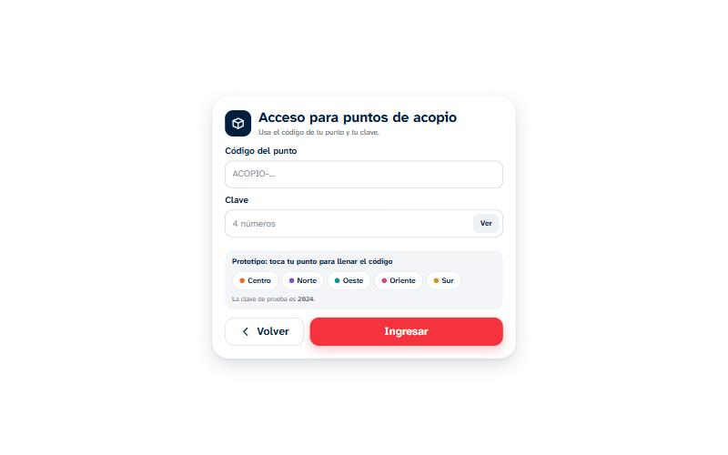
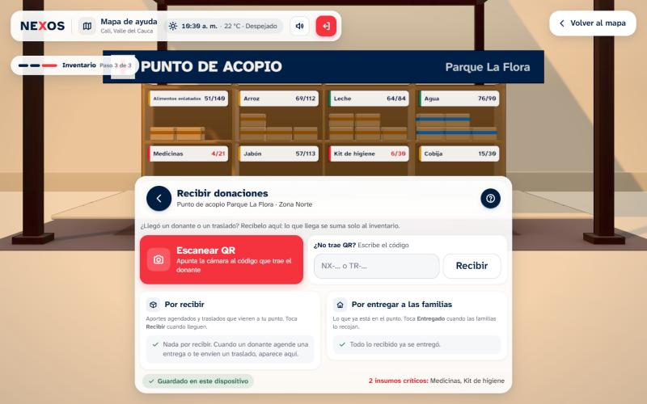

Navegación
5 %Esqueleto · Mapa de la experiencia, navegación global y local, cámara 3D y cómo se sabe dónde se está y cómo volver.Mapa de la experiencia
Portada
Donante
Punto de acopio
Seguimiento
Estrategias
| Estrategia | Cómo funciona |
|---|---|
| Navegación global | La barra superior está en todas las escenas: el logo, el nombre del lugar, el sonido y salir. Salir siempre lleva a la portada. |
| Navegación local | Cada panel tiene "‹" para volver a su nivel anterior y "×" para cerrar. Dentro del punto, las subvistas (Inventario, Recibir, Enviar) vuelven al menú con "‹". |
| Orientación | La barra de progreso dice el paso ("Paso 3 de 5"), la barra superior el lugar ("Barrio La Flora") y el título del panel lo que se hace ("¿Qué quieres donar?"). |
| Cámara 3D guiada | No hay que manejar la cámara: la app baja entre nubes, se acerca a la zona elegida y el guía camina hasta el punto (tocar para ir). En la ciudad se puede girar un poco, con límites, y "Centrar mapa" la devuelve a su lugar. |
| Retorno siempre posible | "Volver al mapa" y "Volver al barrio" están siempre arriba a la derecha. La cesta se conserva al volver, y los cambios del inventario se pueden deshacer. |
| Rol con alcance limitado | El punto de acopio solo puede abrir su zona. Si toca otra, la app le explica que no es la suya. |
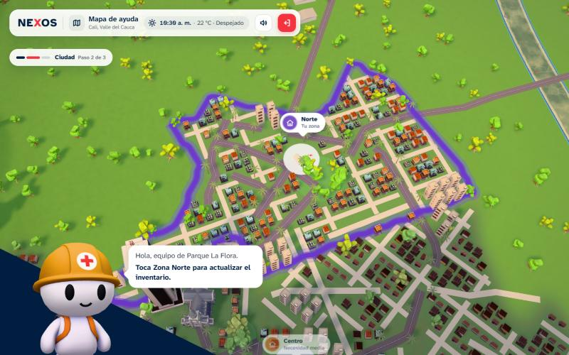
Diseño de información
5 %Esqueleto · Cómo se organiza y dosifica el contenido según la tarea.| Estrategia | Ejemplo concreto |
|---|---|
| Jerarquía | La tarjeta de zona va del nombre (28 px) a la emergencia, el nivel de necesidad, lo que más se necesita y el punto de acopio, y termina en el botón. El ojo baja en orden de decisión. |
| Dosificación | La tarjeta de zona muestra solo las 3 necesidades principales, en palabras ("Alta", "Media"). El guía da una sola instrucción por paso. El detalle (dirección y horario) va al final, en letra pequeña. |
| Agrupación | Donar agrupa los insumos por 5 categorías. El inventario los agrupa por estado con filtros. Recibir separa "Por recibir" de "Por entregar a las familias". |
| Visualización | Barras de nivel en cada insumo, tres guiones de necesidad (●●● Alta), la estantería 3D con cajas reales, y cuánto llena la cesta de una caja. |
| Iconografía | Un ícono propio por categoría y por insumo, siempre en el círculo del color de su categoría. El punto rojo indica urgencia. |
| Lenguaje | Se habla de tú, con frases cortas y verbos de acción: "Toca un suministro para agregarlo", "Entra al barrio para ver dónde llega tu ayuda". |
Procedencia del contenido
- Lugares reales: barrios, puntos de acopio y direcciones de Cali (Parque La Flora, Capilla de San Antonio y Parroquia la Virgen Peregrina, entre otros), con su horario de atención.
- Hora y clima: la hora de Colombia y la salida y puesta del sol de Cali, calculadas cada día.
- Vías: OpenStreetMap.
- Inventario: la hoja de Google del punto, actualizada por los encargados.
- Valores de referencia: los precios de los insumos (por ejemplo, arroz de 1 kg a $4.800) son valores aproximados de mercado para el prototipo. No vienen de una fuente oficial.
Seguimiento ocular
4 %Superficie · Recursos de composición para guiar la mirada, y cómo el eye tracking los confirmó o los cambió.Prueba del 22 de octubre de 2026 con un participante de 19 años, sobre la versión publicada en ese momento. En cada mapa de calor, el rojo indica más tiempo de fijación y el verde menos. Al lado de cada uno está la pantalla después del ajuste.
Recursos de composición que se usan
- Escala: el guía y los títulos grandes atraen primero; el botón principal es el elemento más grande de su panel.
- Contraste de color: el rojo se reserva para la acción y lo urgente, así que la mirada va ahí.
- Dirección: el guía está abajo a la izquierda y su burbuja apunta hacia el mapa; el recorrido de lectura termina abajo a la derecha, en el botón.
- Luz en la escena 3D: la zona elegida conserva su color y luz, y las demás se oscurecen.
- Movimiento: la cámara se acerca a lo elegido y las urgencias laten suavemente.
1 · Ciudad
Lectura: la fijación más fuerte cae sobre la cara y el casco del guía, abajo a la izquierda. La burbuja y los marcadores de las zonas reciben poca atención. El guía, grande y de alto contraste, le robaba la mirada a la ciudad, que es donde está la tarea.
Ajuste: los marcadores pasaron a ser etiquetas con nombre y número de urgencias ("Norte · 2 urgentes"), y la frase de acción de la burbuja va en negrita ("Selecciona una zona de la ciudad").
2 · Panel de donar
Lectura: el calor se concentra en la primera categoría (Medicinas) y su insumo. Agua, Refugio, Alimentos e Higiene casi no se miran. Esto coincide con el informe: el participante no notó las demás categorías. Los íconos eran pequeños, sin fondo y del mismo peso que el texto.
Ajuste: las categorías ahora son fichas de 111 × 84 px. El ícono va en un círculo de su color, la elegida es azul oscura y las urgentes llevan un punto rojo. Se quitó la línea repetida "Medicinas · 1 insumo".
3 · Inventario
Lectura: la mirada salta entre la pestaña "Recibir 6", con su contador rojo, la primera tarjeta y la última (Cobija), sin un recorrido claro. El resumen de críticos de abajo casi no se mira. Esto coincide con el hallazgo de prioridad alta: orientación y organización del inventario.
Ajuste: el punto abre con un menú de tres acciones, así que cada tarea tiene su propia pantalla. Arriba del tablero hay filtros con conteo (Todos 8, Críticos 2…), y las tarjetas críticas tienen borde rojo.
4 · Recibir
Lectura: las fijaciones están en el título y en el botón "Recibir", al final del campo. El botón "Escanear QR" recibe poca atención y el recorrido es corto: es la tarea más clara, tal como lo dice el informe.
Ajuste: se mantuvo la estructura y se reforzaron las dos formas de recibir, lado a lado: "Escanear QR" como botón rojo grande y "¿No trae QR? Escribe el código". Debajo van las listas "Por recibir" y "Por entregar a las familias".
Contraste y uniformidad
3 %Superficie · Para qué se usó el contraste y la uniformidad, con verificación WCAG de los textos.Contraste para…
- Destacar: el único botón rojo del paso sobre un panel blanco.
- Separar: los paneles blancos opacos sobre la escena 3D de color.
- Jerarquizar: título azul oscuro en 800 y subtítulo gris en 400.
- Enfocar en 3D: la zona activa a todo color y las demás oscurecidas.
Uniformidad para…
- Agrupar: todas las tarjetas de insumo con el mismo tamaño y orden.
- Calmar: un solo radio por nivel (24, 18 y 12 px), una sola sombra azul y una sola curva de animación.
- Igualar: las 5 fichas de categoría con el mismo peso, para que ninguna se pierda (hallazgo de la prueba).
Verificación de contraste de texto (WCAG 2.1)
Calculado con la fórmula de luminancia relativa de WCAG. AA exige 4,5:1 para texto normal y 3:1 para texto grande (desde 24 px, o 18,7 px en negrita).
| Muestra | Texto / fondo | Contraste | Resultado |
|---|---|---|---|
| Texto principal | #011E41 / #FFFFFF | 16,62:1 | AAA |
| Elegido | #FFFFFF / #011E41 | 16,62:1 | AAA |
| Carbón | #323232 / #EDEDED | 10,95:1 | AAA |
| Abastecido | #1E5B36 / #E7F1EB | 6,98:1 | AA |
| Estable | #7A4B00 / #FCEBCB | 6,31:1 | AA |
| Crítico | #A3262F / #FDE3E5 | 6,01:1 | AA |
| Medicinas | #6E4BB0 / #ECE6F7 | 5,23:1 | AA |
| Refugio | #5B6170 / #E9EBEF | 5,19:1 | AA |
| Rojo presionado | #FFFFFF / #D92632 | 4,91:1 | AA |
| Texto secundario | #6B7280 / #FFFFFF | 4,83:1 | AA |
| Agua | #2F69A3 / #E2ECF7 | 4,79:1 | AA |
| Alimentos | #9A5B1E / #F5E7DA | 4,45:1 | AA grande · ícono |
| Higiene | #1F7A86 / #DDF0F2 | 4,26:1 | AA grande · ícono |
| Botón principal | #FFFFFF / #F5333F | 3,87:1 | AA grande |
| 8 insumos críticos | #F5333F / #FFFFFF | 3,87:1 | AA grande |
| Ámbar puro | #E39B1B / #FFFFFF | 2,34:1 | Solo gráficos |
#F5333F con texto blanco da 3,87:1: cumple para texto grande y para componentes (3:1), pero no para texto normal. Los botones usan texto de 18 px en negrita, justo por debajo del umbral de texto grande (18,7 px). El ámbar puro solo se usa en barras y puntos, nunca para texto: el texto ámbar usa #7A4B00. Para cumplir AA en todos los textos, el fondo de los botones con texto podría pasar a #D92632 (4,91:1), el rojo que ya se usa al presionar.Retícula y diagramación
4 %Superficie · Retícula de la capa 2D medida sobre la app real, en computador y celular, y su relación con la escena 3D.Las retículas se midieron con las cajas reales de cada elemento y se superpusieron sobre la app publicada: 1440 × 900 px en computador y 390 × 844 px en celular (iPhone 14). El rojo marca márgenes y filas, y el azul las columnas.
Computador · 1440 × 900
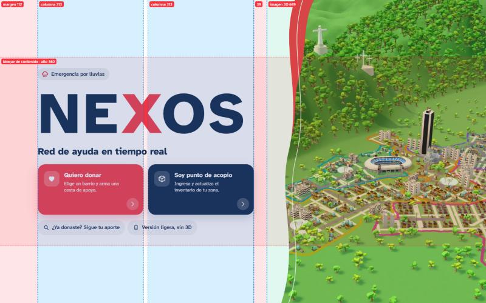
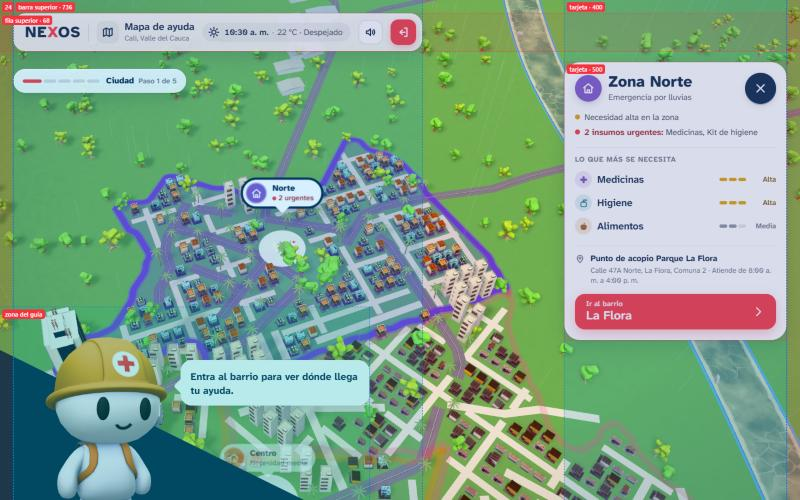

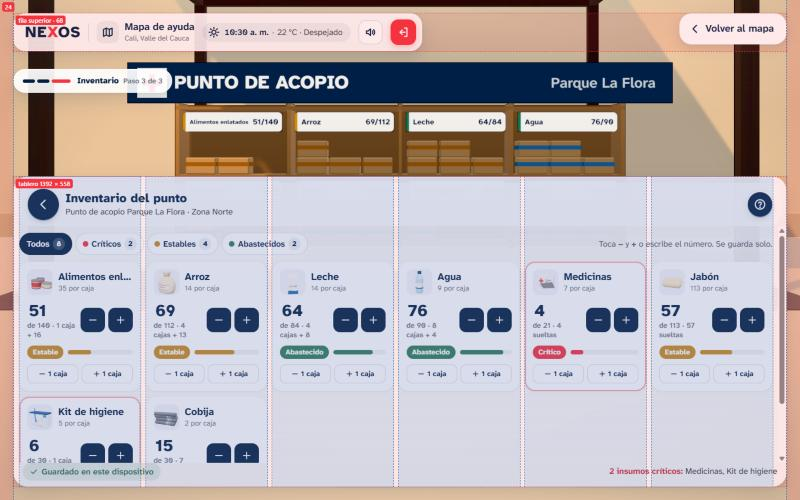
Celular · 390 × 844
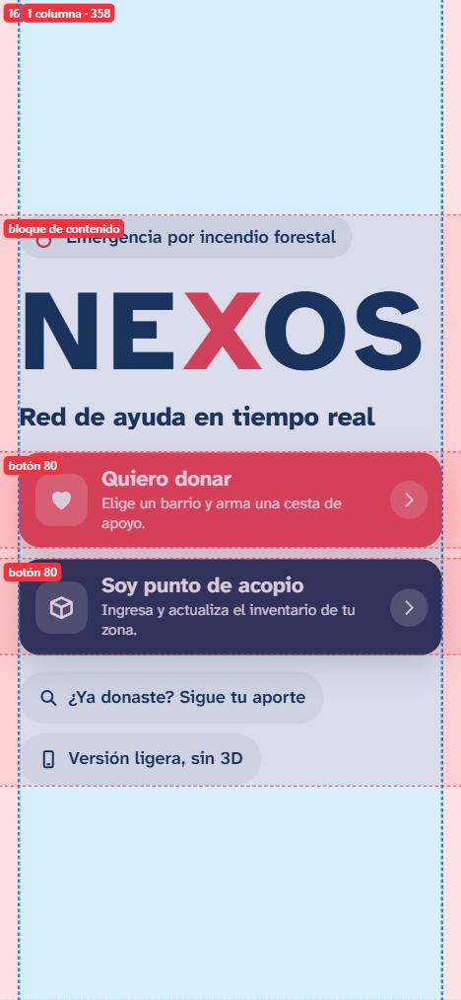
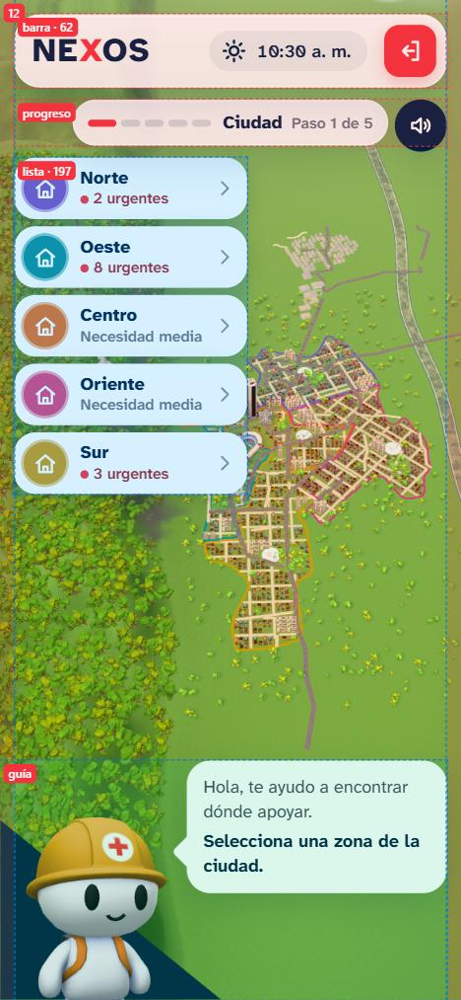
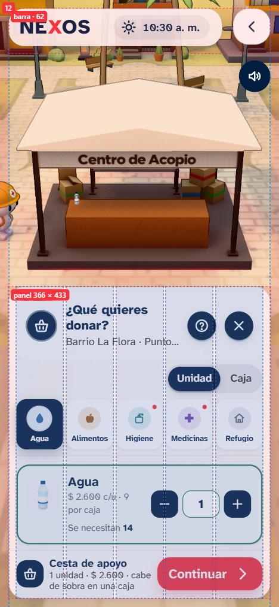
Relación con la escena 3D
- Zona libre: los paneles se apoyan en un borde (izquierda, derecha o abajo) y dejan libre el resto, donde la cámara encuadra lo importante.
- Desplazamiento del centro de la cámara: cuando abre un panel,
viewOffsetcorre el centro de la imagen hacia la zona libre. Por eso el punto de acopio aparece a la derecha del panel de donar, y la estantería sobre el tablero del inventario. - Celular: el 3D va arriba y el panel abajo, porque el pulgar alcanza la parte inferior de la pantalla.
Consistencia interna
3 %Superficie · Coherencia entre pantallas y escenas: estilo 3D, interfaz, tono del texto y animación.| Qué se mantiene igual | Cómo | Propósito |
|---|---|---|
| Estilo 3D | Formas simples, superficies mates, luz por bandas, colores terrosos y verdes suaves, y la misma luz del sol en todas las escenas. | Que la ciudad, el barrio y el punto se sientan como un solo lugar. |
| Interfaz | Paneles blancos con radio de 24 px y sombra azul, la misma barra superior, los mismos botones y la misma fuente. | Que cada pantalla nueva ya se sepa usar. |
| Versión ligera | Las mismas fichas, colores, iconos y textos que la 3D (desde el 12 y 28 de octubre). | Que cambiar de versión no sea aprender otra app. |
| Tono del texto | Se habla de tú, en frases cortas, con un verbo de acción por instrucción, y sin tecnicismos ni porcentajes. | Calma y claridad en una emergencia. |
| Animación | Una curva (cubic-bezier(0.33, 0, 0.2, 1)) y una duración base (420 ms). Al presionar, escala 0,97. La cámara usa transiciones suaves de GSAP. | Movimiento tranquilo y predecible. |
Color
3 %Superficie · Paleta en HEX, rol de cada color y su propósito, en la interfaz y en la escena 3D.Marca
#011E41Texto, lo elegido, confianza.
#F5333FAcción principal y lo crítico. Nada más.
#D92632Estado activo del botón.
#323232Texto neutro.
#EDEDEDFondos de apoyo.
#FFFFFFPaneles sobre el 3D.
Estados
#A3262F / #FDE3E5Por debajo del 30 %.
#E39B1BNecesidad alta, no alarma. Texto:
#7A4B00.#7A4B00 / #FCEBCBEntre 30 % y 75 %.
#1E5B36 / #E7F1EB75 % o más; guardado; entregado.
Categorías de ayuda (tinta / fondo)
#9A5B1E / #F5E7DA#2F69A3 / #E2ECF7#6E4BB0 / #ECE6F7#1F7A86 / #DDF0F2#5B6170 / #E9EBEFZonas de la ciudad (círculo sólido)
#7B52C7#0E8F9C#E0702A#D6457F#C99A1EEscena 3D (día despejado)
#A9C6DA → #E9EFF2#A7B98C#E4DDD0#6F8E64#8EB2C0#D9D3C8Tipografía
3 %Superficie · Familia, escala, pesos y usos, y legibilidad en computador y celular.Atkinson Hyperlegible Next
Del Braille Institute, diseñada para personas con baja visión. Diferencia las letras que se confunden (I, l, 1; O y 0; b, d, p, q) y tiene aberturas amplias. Se eligió porque el público incluye adultos mayores y personas bajo estrés. Pesos usados: 400, 500, 600, 700 y 800.
Il1 O0 bdpq · 0123456789 · ¿Qué quieres donar?
Escala (texto base de 18 px)
Legibilidad
- El texto base es de 18 px, mayor que los 16 px habituales. Nada lleva menos de 13 px, y esa medida se usa solo para etiquetas en negrita.
- En celular la escala se mantiene, y los nombres largos se recortan con "…" en lugar de achicar la letra. La excepción son las fichas de categoría, que bajan de tamaño para que "Medicinas" quepa entera.
- El interlineado de los párrafos es de 1,4 a 1,6, y los números usan cifras tabulares en el inventario para que se alineen.
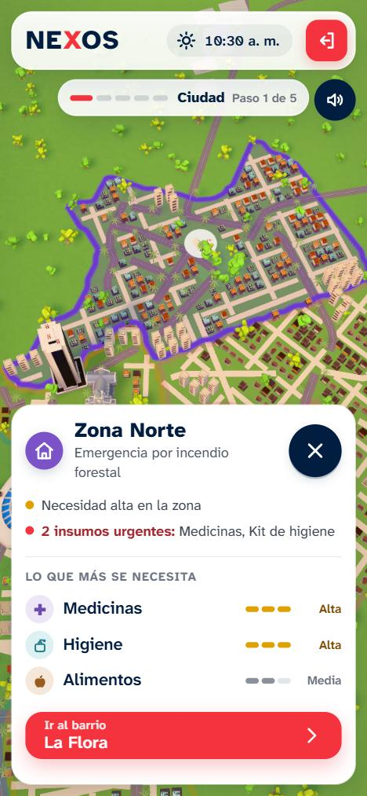
Guía de estilo
5 %Superficie · Compendio para extender NEXOS sin perder coherencia, con ejemplos de uso correcto e incorrecto.1. Tokens
| Token | Valor | Uso |
|---|---|---|
--navy · --red · --red-press | #011E41 · #F5333F · #D92632 | Ver Color. |
--font | Atkinson Hyperlegible Next | Toda la interfaz. |
--fs-xs … --fs-2xl | 13 · 15 · 18 · 22 · 28 · 34 px | Ver Tipografía. |
--radius-lg / md / sm / pill | 24 · 18 · 12 · 999 px | Paneles · tarjetas · botones y campos · etiquetas. |
--shadow-soft | 0 12px 32px rgba(1,30,65,.14) | Paneles sobre el 3D. |
--gutter | 24 px (12 px en celular) | Margen de la capa 2D. |
--tap | 56 px | Alto mínimo de lo tocable principal (44 px en botones de ícono). |
--ease-calm · --dur | cubic-bezier(0.33, 0, 0.2, 1) · 420 ms | Toda transición de la interfaz. |
2. Componentes con sus estados
El inventario completo de componentes, con su función y ubicación, está en Elementos de la interfaz.
3. Estilo 3D e ilustración
- Formas simples de pocos polígonos, en quads y sin n-gonos. Las puertas miden 2,1 m para que todo tenga la misma escala.
- Texturas de Substance: solo BaseColor, Normal y Roughness, con superficie mate (en los árboles, roughness 1).
- Luz por bandas de dos o tres tonos y sombras suaves de color azulado, nunca negras.
- Colores apagados en el entorno; el color saturado se reserva para las zonas y la interfaz.
- Personajes con el cuerpo del guía: cabeza grande, sin dedos, cara dibujada.
4. Animación
- Interfaz:
--ease-calmy 420 ms. Al presionar, escala 0,97. Nada rebota. - Cámara: transiciones largas y suaves de GSAP. La bajada entre nubes no se detiene mientras carga.
- Urgencias: un latido suave, sin parpadeo rápido.
- Respetar
prefers-reduced-motion.
5. Uso correcto e incorrecto
Un solo botón rojo por paso, el de avanzar.
Dos rojos compiten y el usuario no sabe cuál es la acción.
La necesidad en palabras, con un indicador simple.
Un porcentaje exige interpretar y no dice si es grave.
Panel blanco casi sólido sobre la escena 3D.
Vidrio decorativo: el texto se pierde sobre el 3D (versión del 1 de octubre).
Cada estado con su color de siempre.
Morado (categoría) para un estado o rojo para una categoría: se rompe el significado.
6. Para extender NEXOS
- Una pantalla nueva: panel blanco apoyado en un borde, con título, subtítulo, "?" y "×" arriba, el contenido en la retícula del panel y un solo botón rojo abajo a la derecha.
- Un insumo nuevo: agrégalo a
src/data/catalog.jscon su categoría, crea su ícono enicons.jscon trazo redondeado de 2 px y dale un modelo o la caja genérica. - Una casa nueva: sigue el proceso de
fuentes_3d/LEEME.md(puerta de 2,1 m, BaseColor, Normal y Roughness, yfbx_to_glb.py). - Un color nuevo: no puede ser rojo, azul noche, verde ni ámbar, y su texto debe pasar 4,5:1.
NEXOS · Documento de proyecto · Octubre de 2026 · Bitácora · Evolución · App